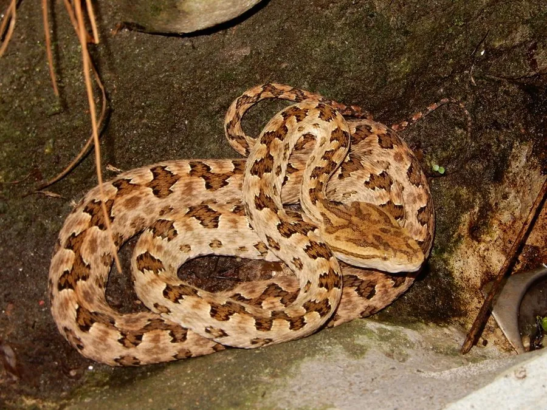

爬行动物 · 动物界
原矛头蝮 Protobothrops mucrosquamatus

中国南方常见的毒蛇，头部三角形似烙铁，体侧有龟壳状斑纹，夜行捕鼠，被咬后须立即就医，夜间活动注意脚下。
- 分类
- 门脊索动物门纲爬行纲目有鳞目科蝰科属原矛头蝮属
- 栖息环境
- 山区灌丛、竹林、溪边、农田与岩壁附近
- 地理分布
- 中国南方多省区及越南、缅甸等东南亚国家
- 保护级别
- IUCN 无危（LC）；中国未列入国家重点保护名录
物种志
原矛头蝮体长 1–1.3 米，身体较细长，头部呈三角形，颈部细，形似烙铁，“烙铁头”之名由此而来；体色以棕褐或灰褐为底，背部有一行较大的深褐色斑块，斑块边缘镶黄边，体侧另有较小的斑点，整体花纹形似龟壳，因此又叫“龟壳花”。
它分布于中国南方以及越南、缅甸等地，栖息于山区灌丛、竹林、溪边和农田附近，多在夜间活动，捕食鼠类、蛙类、鸟类和蜥蜴，善于攀爬。它是卵生蛇类，雌蛇每次产卵 5–13 枚，孵化期约 50–60 天。原矛头蝮毒性较强，被咬后局部会迅速肿胀、疼痛并可能出血，须立即就医；它捕食鼠类，对控制鼠害有一定作用，夜间在户外活动时要注意脚下和草丛。
形态与习性
- 食性鼠类、蛙类、鸟类和蜥蜴
- 体长1–1.3 m
- 寿命约 10–15 年
- 繁殖卵生，5–13 枚，孵化 50–60 天
- 活动节律夜行性，善攀爬
- 毒性毒性较强，被咬后肿痛，须立即就医
趣味知识
- 原矛头蝮头部呈三角形，形似烙铁，民间叫它“烙铁头”。
- 它背部斑块排列成龟壳状，因此又有“龟壳花”的俗称。
- 原矛头蝮夜间活动，善于攀爬，常在溪边和灌丛中捕鼠。